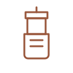

Indian Filter
- Grind
- Medium
- Coffee
- 7–8 g
- Water
- 177 ml
- Temp
- 91–96°C
- Time
- ~10 min
- Boil water and let it sit 30 seconds, bringing it down to 91–96°C.
- Place the brew basket inside the brewer. Add one level spoon of coffee per cup.
- Level the grounds gently, then place the plunger inside the basket.
- Pour the water into the basket up to the neck. Close the lid.
- In about 10 minutes the decoction is ready. Remove the basket.
- Add milk and sugar to taste.